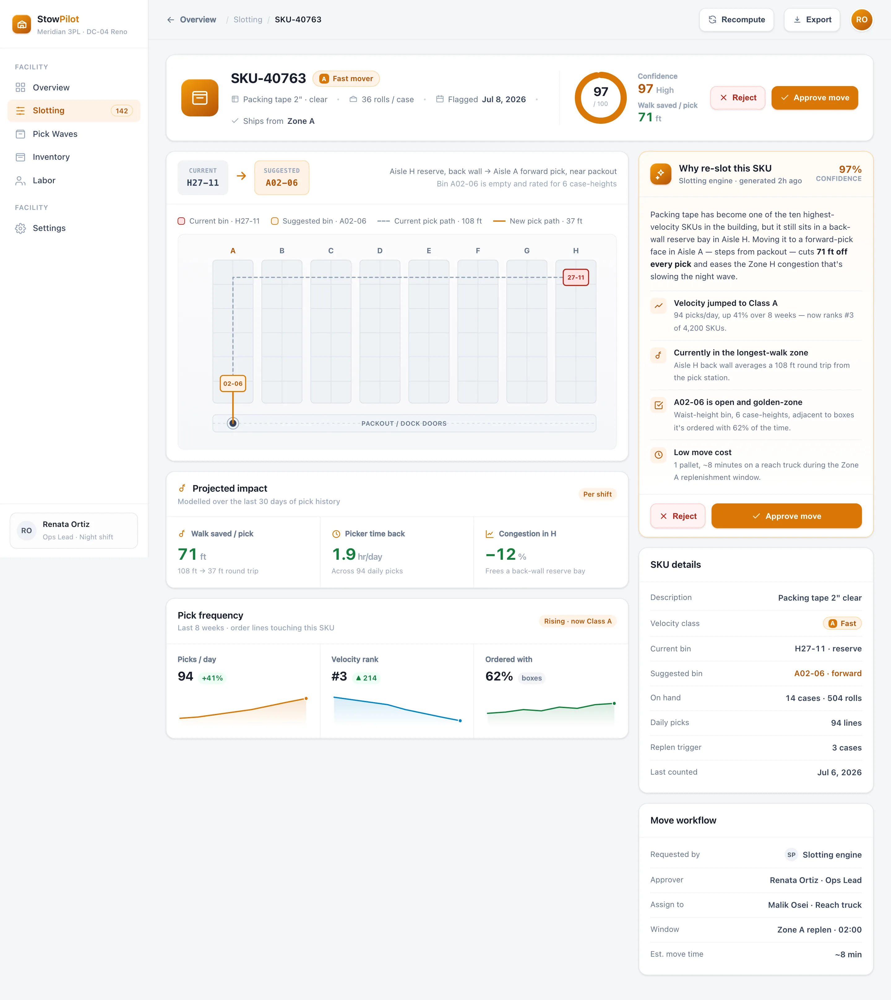

Rank by velocity
Every SKU is scored on pick frequency, order affinity, and seasonality, then bucketed into A / B / C velocity classes that decide how close to the dock it belongs.
StowPilot re-slots your SKUs by velocity, plans each pick wave, and routes pickers on the shortest path — so the same crew clears more orders without walking an extra mile per shift.
More than half of a picker's shift is spent traveling — not picking. StowPilot attacks the four things that make that walk longer than it has to be.
High-velocity SKUs stranded in back-wall reserve force the longest, most-repeated trips of the day.
Orders released one by one send pickers criss-crossing the same aisles instead of clearing them once.
Too many pickers funneled into one hot zone means waiting, backtracking, and re-routing on the fly.
Half-empty golden-zone bins next to overflowing ones waste the shelf real estate closest to the dock.
Cut the travel share and you add pick capacity without adding headcount. Here's a typical shift before StowPilot re-slots the building.
StowPilot closes the loop from demand data to the floor — re-slotting the building, batching the wave, and sequencing every stop so the walk is as short as physics allows.
Every SKU is scored on pick frequency, order affinity, and seasonality, then bucketed into A / B / C velocity classes that decide how close to the dock it belongs.
Fast movers get pulled into golden-zone forward pick, each move ranked by the walk it saves and shipped as an explainable, one-click approval for your ops lead.
Orders are batched into a wave and each picker gets a serpentine route that visits every stop once — the shortest path across the aisles they're assigned.
BuildspaceLabs built the MVP front end: a Warehouse Control dashboard for the whole facility and a single re-slotting recommendation the ops lead approves or rejects.
Live wave, pick rate, walk-per-pick and slot utilization sit above a falling walk-distance trend, a ranked re-slotting table, and zone-by-zone congestion.

A single SKU's before/after bins are drawn on a warehouse aisle grid, with the walk saved, pick-frequency trend, and the AI rationale — then a one-tap approve or reject.

Slotting, wave planning and pick routing consolidated into one control surface — nothing left to a whiteboard or a tribal-knowledge map.
Live wave, pick rate, walk-per-pick and slot utilization over a falling walk-distance trend.
A/B/C classes and ranked move suggestions that pull fast movers into golden-zone forward pick.
Serpentine pick routes that visit every stop in a wave once, sequenced to minimize total travel.
Batch orders into balanced waves by zone and cart, so pickers clear an aisle instead of revisiting it.
Live pick density and labor balance by aisle zone, flagging the hot spots before they stall a wave.
Every recommendation ships with its walk savings, a confidence score and a rationale you can audit.
Warehouse teams have been burned by black-box slotting. StowPilot shows the feet saved, the bin it picked and why — so the floor trusts the move before the reach truck rolls.
Delivered as a production-quality MVP in a nine-week engagement.
We build AI-native products like StowPilot. Tell us how your DC is laid out and where the walk piles up, and we'll show you what velocity re-slotting and shortest-path routing look like on your floor.